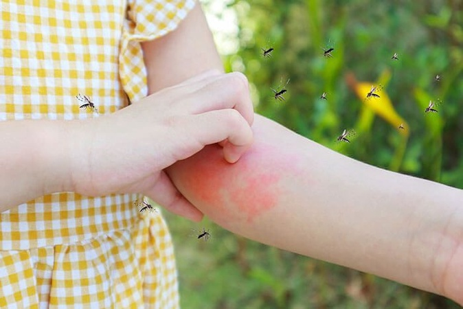

Oque é? Doença febril causada por vírus, caracterizada principalmente por febre alta de início rápido. Costuma apresentar devido ao mal-estar provocado pelos sintomas que normalmente duram até sete dias. A principal forma de transmissão é pela picada da fêmea infectada do mosquito Aedes aegypti.
Quando descobriram a Dengue? A primeira epidemia documentada clínica e laboratorialmente ocorreu em 1981-1982, em Boa Vista (Roraima)..
No Brasil em 2024, com menos de três meses, já se tornou o pior ano da série histórica: 1.889.206 casos de dengue e 561 mortes confirmadas. Minas Gerais têm o pior cenário. De cada três pessoas com dengue no país, uma vive ali.
Não jogue lixo em terrenos baldios
Realizar a limpeza regular da caixa d'água e sempre mantê-la fechada, com tampa adequada também entra nesta lista.
Evitar a proliferação do mosquito Aedes Aegypti, eliminando água armazenada que podem se tornar possíveis criadouros
Remova galhos e folhas de calhas;
Cuidar de plantas e vasos, para que não acumule água.
Dores musculares intensas.
Dor ao movimentar os olhos.
Falta de apetite.
Manchas vermelhas no corpo.